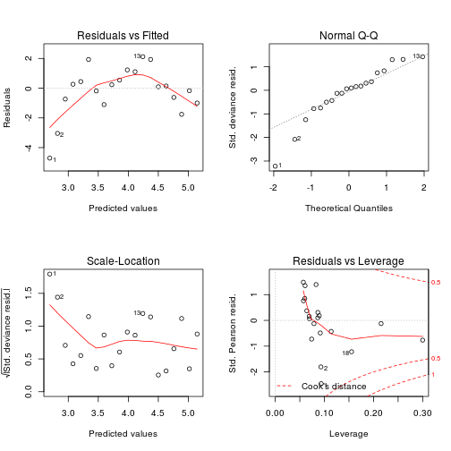
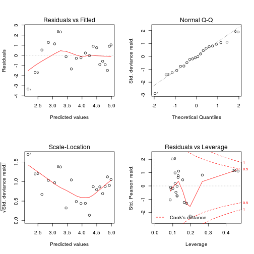
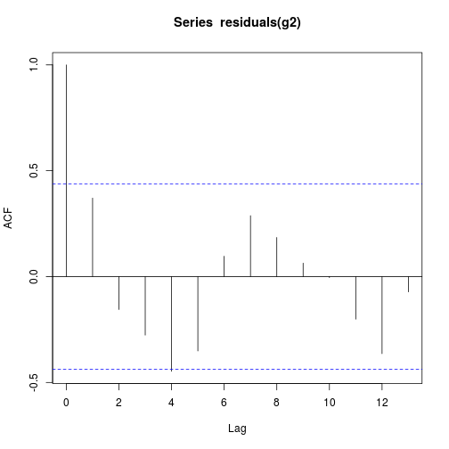

definition: ‘’’family’‘’ +’‘’link function’’’
family: what kind of data do I have? (from ‘’’first principles’‘’) (in particular, specifies the relationship between the mean and variance) ** binomial: proportions, out of a total number of counts; includes binary (Bernoulli) (’‘logistic regression’’) ** Poisson (independent counts, no set maximum, or far from the maximum) ** other (Normal, Gamma)
link function: on what scale are the data linear? ** there is typically a “canonical” answer (sensible + nice math) ** Poisson=log; binomial=logit *** ‘’inverse-link’’: exponential; logistic (respectively) ** further discussion of logit scale (picture below) ** rules of thumb
GLMs construct a “linear predictor” \(x\) that (roughly) fits the data on the link scale ** The fit does not apply the link function to the responses, but instead applies the ‘’inverse’’ link function to the linear predictor ** e.g., instead of \(\log(y) \sim x\), we analyze \(y \sim \mathrm{Poisson}(\exp(x))\) ** This is good, because the observed value of \(y\) might be zero
model setup: same as linear models (categorical, continuous) but now we are fitting on the linear predictor (link) scale
plot of chunk logit-pic.R
a little harder than linear models: plot is still somewhat useful
binary data especially hard
goodness of fit tests, \(R^2\) etc. hard (can always compute cor(observed,predict(model, type=response)))
residuals are ‘’Pearson residuals’’ by default (scaled by expected variance); predicted values are on the link scale (e.g. log/logit) by default
OVERDISPERSION ** too much variance: (residual deviance)/(residual df) should be \(\approx 1\). (If the ratio is >1.2, worry a little bit; if the ratio is greater than \(\approx 3\), something else might be wrong with your model.) ** quasi-likelihood models ** negative binomial etc. ** NB=Poisson; binomial=beta-binomial
Wald \(Z\) tests (i.e., results of summary()), confidence intervals ** Approximate, can be way off if parameters have extreme values ** Asymptotic (finite-size correction is hard)
likelihood ratio tests (equivalent to \(F\) tests); drop1(model,test="Chisq"), anova(model1,model2)), profile confidence intervals (MASS::confint.glm)
AIC
formula similar to lm (but specifies relationship on linear predictor scale)
specify family and link
always do Poisson, binomial regression on ‘’counts’’, never proportions (although you can specify response as a proportion if you also give \(N\) as the weights argument
Use offsets to address unequal sampling
always check for overdispersion ‘’unless’’ (1) already using quasilikelihood or (2) using binary data
if you want to quote values on the original scale, confidence intervals need to be back-transformed; never back-transform standard errors alone
stat_sum, position="jitter", geom_dotplot ([http://stackoverflow.com/questions/11889353/avoiding-overlap-when-jittering-points beeswarm plot]))## Error: Unknown parameters: family##
## Call:
## glm(formula = cases ~ date, family = quasipoisson(link = "log"),
## data = aids)
##
## Deviance Residuals:
## Min 1Q Median 3Q Max
## -4.7046 -0.7978 0.1218 0.6849 2.1217
##
## Coefficients:
## Estimate Std. Error t value Pr(>|t|)
## (Intercept) -1.023e+03 6.806e+01 -15.03 1.25e-11 ***
## date 5.168e-01 3.425e-02 15.09 1.16e-11 ***
## ---
## Signif. codes: 0 '***' 0.001 '**' 0.01 '*' 0.05 '.' 0.1 ' ' 1
##
## (Dispersion parameter for quasipoisson family taken to be 2.354647)
##
## Null deviance: 677.26 on 19 degrees of freedom
## Residual deviance: 53.02 on 18 degrees of freedom
## AIC: NA
##
## Number of Fisher Scoring iterations: 4
##
## Call:
## glm(formula = cases ~ poly(date, 2), family = quasipoisson(link = "log"),
## data = aids)
##
## Deviance Residuals:
## Min 1Q Median 3Q Max
## -3.3290 -0.9071 -0.0761 0.8985 2.3209
##
## Coefficients:
## Estimate Std. Error t value Pr(>|t|)
## (Intercept) 3.86859 0.05004 77.311 < 2e-16 ***
## poly(date, 2)1 3.82934 0.25162 15.219 2.46e-11 ***
## poly(date, 2)2 -0.68335 0.19716 -3.466 0.00295 **
## ---
## Signif. codes: 0 '***' 0.001 '**' 0.01 '*' 0.05 '.' 0.1 ' ' 1
##
## (Dispersion parameter for quasipoisson family taken to be 1.657309)
##
## Null deviance: 677.264 on 19 degrees of freedom
## Residual deviance: 31.992 on 17 degrees of freedom
## AIC: NA
##
## Number of Fisher Scoring iterations: 4## Analysis of Deviance Table
##
## Model 1: cases ~ date
## Model 2: cases ~ poly(date, 2)
## Resid. Df Resid. Dev Df Deviance F Pr(>F)
## 1 18 53.020
## 2 17 31.992 1 21.028 12.688 0.002399 **
## ---
## Signif. codes: 0 '***' 0.001 '**' 0.01 '*' 0.05 '.' 0.1 ' ' 1